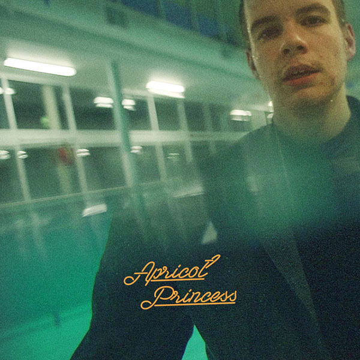
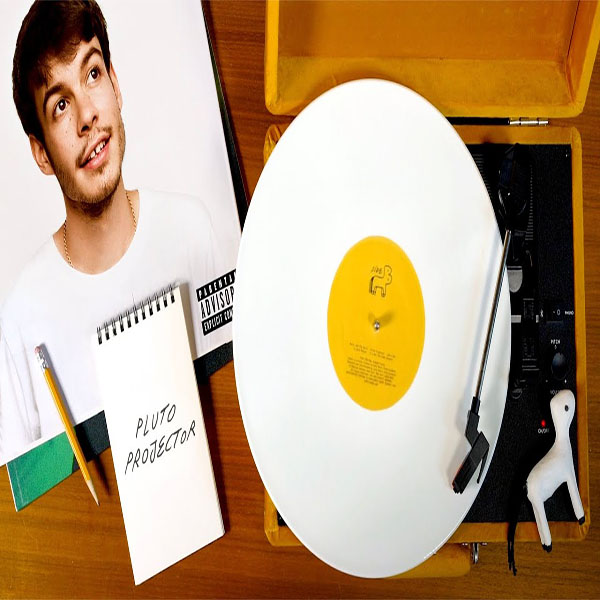
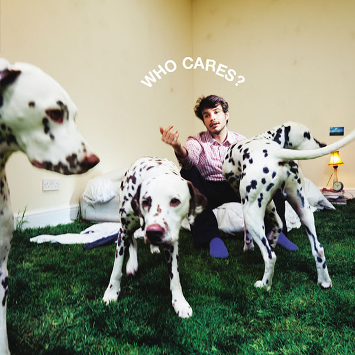

Happiness

Lagu pertama yaitu lagu yang berjudul "Happiness" yang dirilis pada tanggal 26 April 2017. Hampir
semua orang setuju jika lagu "Happiness" ini menjadi salah satu lagu terbaik milik ROC. Dengan judul
"Happiness", ROC mampu membuat banyak pendengarnya terlarut dalam kesedihan. Orang juga akan
tersentuh hatinya karena lirik lagu tersebut yang menceritakan tentang seorang laki-laki yang
mencintai pasangannya hingga akhir hidup. Namun, selain menceritakan betapa sayangnya laki-laki ini
terhadap pasangannya, ada lirik yang menurut saya cukup dalam maknanya. Lirik tersebut adalah "but
will you still love me when nobody wants me around?". Iyaa, laki-laki ini bertanya kepada
pasangannya apakah akan mencintai laki-laki tersebut sedangkan orang lain tidak menginginkan
laki-laki tersebut ada disekitar mereka. Tidak berhenti disitu, lirik yang mempunyai makna lebih
dalam lagi ada dilirik selanjutnya. ROC menuliskan lirik jika suatu saat laki-laki ini hilang
ingatan, apakah pasangannya akan tetap bangga, ketika laki-laki ini memiliki banyak kekurangan, dan
egois, laki-laki ini tidak mengharapkan apapun selain kebahagiaan dari pasangannya. Laki-laki ini
berharap dicintai oleh pasangannya, seperti pasangannya mencintai keluarganya. Dan laki-laki ini
berharap sang gadis dapat bahagia hingga akhir.
Untitled
Lagu kedua yaitu "Untitled". Lagu ini dirilis bersamaan dengan lagu pertama yaitu "Happiness" pada
tanggal 26 April 2017 yang di tulis sendiri oleh Rex Orange County. Lagu ini menurut saya tidak
kalah menyentuh hatinya dari lagu "Happiness". Lagu ini mengisahkan tentang seseorang yang merasa
tidak pantas karena telah membuat kesalahan kepada kekasihnya. Hal ini tertuang dalam liriknya "I
make enough mistakes". Dia pun merasa bodoh karena terlalu mencintai kekasihnya sederas hujan namun
akhirnya hanya membuat kesalahan. Rex pun menuliskan lirik yang menurut saya cukup dalam maknanya
dilagu ini, dengan lirik "But why cant I be any other boy". Lirik tersebut seolah-olah menjelaskan
bahwa dia adalah laki-laki yang tidak bisa menjadi seperti laki-laki lainnya. Kelanjutan dari lirik
tersebut adalah "That doesnt need a hand in love?", yang mempunyai makna bahwa dia menggambarkan
laki-laki ini sebagai laki-laki yang sangat membutuhkan cinta dikehidupannya. Namun, Rex juga
menulis lirik "But how did I fail, To give you all the love that you deserve?". Menurut saya, lirik
tersebut adalah puncak kesedihan dilagu ini. Setelah Rex menggambarkan laki-laki ini membutuhkan
cinta dikehidupannya, Rex juga menuliskan kekhawatiran dari laki-laki ini jika dia gagal untuk
memberikan seluruh cinta yang harusnya didapatkan oleh kekasihnya. Dan dia pun tidak peduli jika
kekasihnya membencinya karena dia pun akan membenci dirinya sendiri dikala gagal untuk memberikan
seluruh cinta yang seharusnya didapatkan oleh kekasihnya tersebut.
Pluto Projector

Lagu ketiga berjudul "Pluto Projector" yang dirilis pada tanggal 29 Oktober 2019 dalam album Pony.
Lagu ini merupakan salah satu karya Alexander James O'Connor atau lebih dikenal sebagai Rex Orange
County. Lagu ini sempat viral dalam salah satu media sosial yaitu Tiktok. Lagu ini sering digabung
dengan lagu-lagu lainnya milik beberapa penyanyi. Sebenarnya untuk lagu ini bagus menurut saya ada
pada bagian instrumen dari lagu ini yang bisa nenambah kesan sedih dari lagu-lagu milik Rex Orange
County. Dalam konteks lirik mengisahkan antara Rex dengan kekasihnya (Thea). Rex mengatakan bahwa
dia memiliki banyak hal yang dapat dia beri atau ditawarkan pada kekasihnya. Rex dan Thea telah
menjalin hubungan selama empat tahun. Rex merasa nyaman berada didekat Thea. Sehingga Rex berharap
hubungan mereka dapat bertahan selamanya dengan kekasihnya. Rex mulai memahami menjadi dewasa dan
dampak terhadap hubungannya. Rex menghabiskan masa mudanya dalam dunia karir yang membuat dia tidak
mempunyai banyak waktu sendirian untuk merenung setiap perubahan dalam dirinya. Dan dia memahami
bahwa dia harus bertanggungjawab atas tindakannya.
The Shade

Lagu terakhir adalah lagu "The Shade". Lagu ini merupakan salah satu lagu terbarunya yang baru
dirilis pada tanggal 11 Maret 2022 dan masuk ke album Who Cares. Lagu ini pun viral dalam media
sosial Tiktok. Lagu ini di upload di YouTube dan berhasil meraih 1 juta penonton. Lagu ini sedikit
berbeda dengan 3 lagu sebelumnya. Jika 3 lagu sebelumnya berisi kesedihan, untuk lagu kali ini,
berisikan tentang romantisnya laki-laki terhadap kekasihnya. Lagu mengisahkan tentang betapa nyaman
serta merasa cukup dengan kehadiran kekasihnya dan dia berharap kekasihnya tidak pergi dari
kehidupan dia. Rex pun ingin menyampaikan bahwa mempertahankan hubungan lebih susah, banyak
pengorbanan yang harus dilakukan untuk mempertahankan hubungan. Lagu ini pun mengajari kita untuk
tetap menghargai keberadaan sang kekasih. Rex juga menuliskan lirik "I was staying by your side"
yang memiliki makna jika dia ingin berada disamping kekasihnya. Tidak hanya disitu, rex juga
menuliskan lirik "Just so I knew you were okay", yang menurut saya ini adalah hal romantis karena
memiliki makna laki-laki tersebut ingin memastikan kekasihnya dalam keadaan yang oke atau baik-baik
saja. Tidak hanya itu, rex juga menggambarkan laki-laki itu berusaha selalu membuat pasangannya
senang dengan berbagai usaha. Mulai dari mengecat dinding dengan warna yang kekasihnya sukai. Dan
Rex pun menggambarkan betapa laki-laki ini hanya menginginkan kekasihnya dan tidak menginginkan
orang lain. Hal tersebut tertuang dalam lirik "I would love just to be stuck to your side, Not with
anybody else, anybody else" . Itulah beberapa lagu Rex Orange County beserta makna yang terkandung
didalamnya. Jadi apakah kisah cinta kalian sama seperti kisah yang tergambar dalam lagu di atas?.